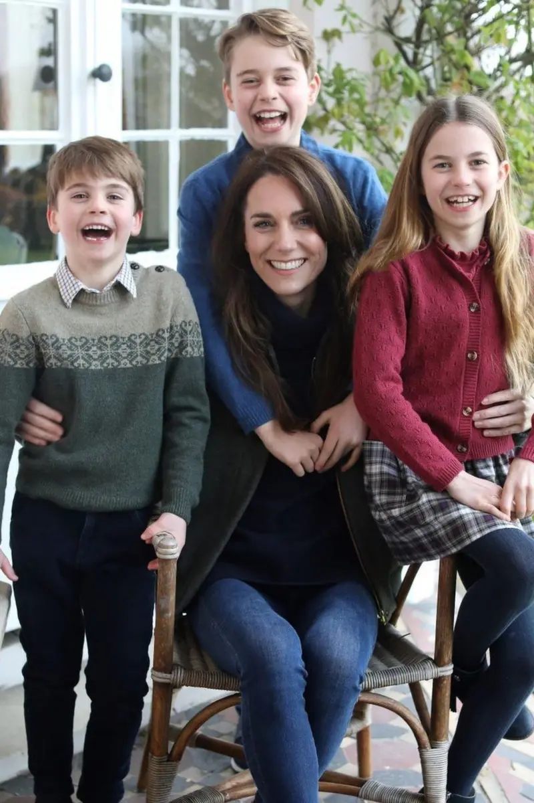

otras noticias
- Cómo un viaje a Noruega me hizo ver que estaba equivocado y que la Tierra no es plana
- Las imágenes falsas creadas con IA para intentar atraer el apoyo de los votantes negros hacia Trump
- “Me arrepiento de haber publicado en línea que yo era Madeleine McCann”
- El Yimeilun, la estrategia con la que China busca influir en las elecciones de Taiwán al sembrar dudas sobre su alianza con EE.UU.
- Las afirmaciones falsas y engañosas amplificadas por Elon Musk en Twitter
- Donald Trump: cómo detectar imágenes creadas por inteligencia artificial como las fotos falsas del arresto del expresidente
- Los sobrevivientes de ataques terroristas que son acusados de fingir por teóricos de la conspiración
- Quiénes son los "Ciudadanos del Reich", el grupo asociado con los golpistas arrestados en Alemania
- LOS DIABÓLICOS ORÍGENES DE LAS TEORÍAS DE CONSPIRACIÓN (Y EL REY FRANCÉS QUE CREÓ UNA DE LAS MÁS EXITOSAS DE TODOS LOS TIEMPOS)
- LA MATANZA QUE LOS SOVIÉTICOS ATRIBUYERON CON ÉXITO A LOS NAZIS DURANTE 50 AÑOS
- RUSIA INVADE UCRANIA: CÓMO SABER SI LO QUE ESTÁS VIENDO SOBRE EL CONFLICTO ES REAL O SON "FAKE NEWS"
La princesa Kate pide disculpas por la "confusión" que causó su foto retirada por las agencias de noticias por inconsistencias

Catherine, la princesa de Gales, pidió disculpas por “cualquier confusión” que haya causado su foto del Día de la Madre, después de que cinco agencias retiraran la imagen por dudas de que había sido “manipulada”.
En un comunicado publicado en las redes sociales del Palacio de Kensington, la princesa Kate declaró: “Como muchos fotógrafos aficionados, ocasionalmente suelo experimentar con edición”.
La foto, tomada por Guillermo, el príncipe de Gales, para el Día de la Madre (que se celebró este domingo en Reino Unido) es la primera que se había distribuido oficialmente de la princesa desde su cirugía abdominal en enero. Desde entonces ha estado alejada de la mirada pública.
Pero luego, las principales agencias noticiosas -PA, Getty Images, AFP, Reuters y Associated Press- retiraron la imagen por una “inconsistencia en la alineación de la mano izquierda de la princesa Charlotte” que, según sus políticas, la invalidaba para circulación.
En su comunicado en X, antiguo twitter, Catherine declaró: “Quiero expresar mis disculpas por cualquier confusión que la fotografía familiar compartida ayer haya causado. Espero que todos los que celebraron hayan tenido un muy feliz Día de la Madre. C.”
La foto muestra a la princesa sentada, rodeada de la princesa Charlotte, el príncipe Louis y el príncipe Jorge, este último envolviendo con sus brazos a su madre.
La imagen se publicó en las cuentas de redes sociales del príncipe y la princesa de Gales con un mensaje en el que Catherine dijo: “Gracias por vuestros buenos deseos y continuo apoyo a lo largo de los últimos dos meses”.
“Deseándoles a todos un feliz Día de la Madre”.
Se ha vuelto una rutina usual que la pareja real distribuya sus propias fotografías durante ocasiones familiares especiales.
La mayoría de las veces, las fotos son tomadas por Catherine y distribuidas a los medios con instrucciones de cómo deben usarse.
En su comunicado la princesa dejó entrever que ella había editado la foto.
La imagen del Día de la Madre se publicó en la portada de varios periódicos y páginas web nacionales, incluyendo BBC News, y utilizada en los boletines de televisión, incluyendo otra vez a la BBC.
Con el propósito de circular la foto lo más pronto posible, la BBC tomó la que el Palacio de Kensington publicó en sus cuentas de redes sociales.
Pero en la noche del domingo, la Associated Press, una de las muchas agencias que distribuyeron la foto, emitió una “notificación de matar”, un término de la industria que se usa para retractar.
Dijo: “Bajo más detallada inspección parece que la fuente manipuló la imagen. No se distribuirá una foto en reemplazo”.
Las agencias noticiosas, como AP, se comprometen con sus clientes a que sus fotos sean exactas y no hayan sido manipuladas digitalmente.
Las reglas de AP sólo permiten “pequeños ajustes” en ciertas circunstancias, como el retiro de polvo de los sensores de las cámaras.